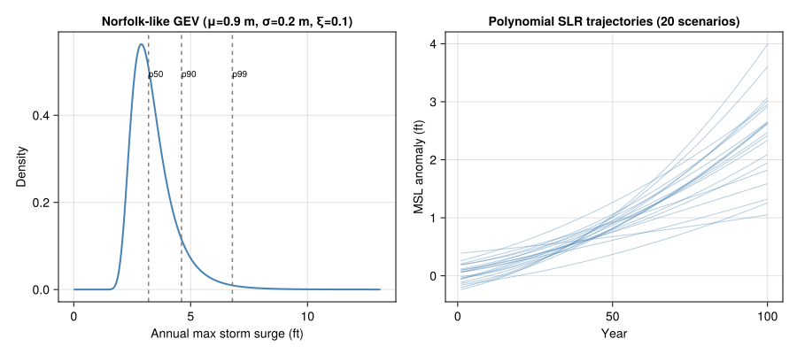
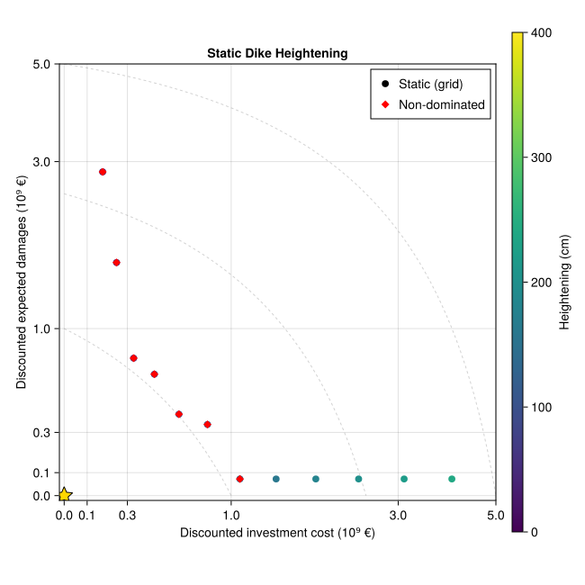
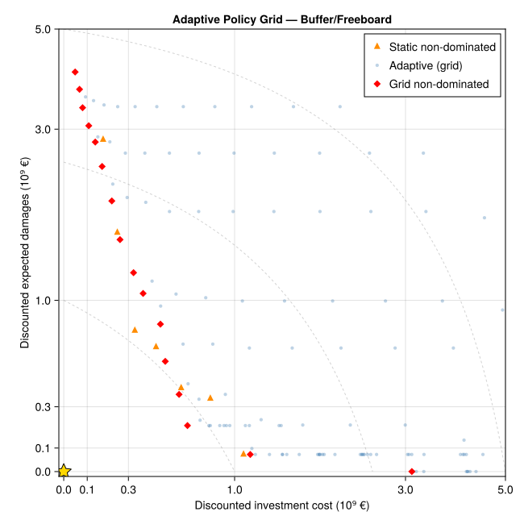

# Install SimOptDecisions if needed
if !isfile("Manifest.toml")
import Pkg
Pkg.instantiate()
end
try
using SimOptDecisions
catch
import Pkg
try
Pkg.rm("SimOptDecisions")
catch
end
Pkg.add(; url="https://github.com/dossgollin-lab/SimOptDecisions")
Pkg.instantiate()
using SimOptDecisions
end
using CairoMakie
using DataFrames
using Distributions
using Random
using Statistics
using Unitful
import Metaheuristics # loads the optimization extension
Random.seed!(2026)Lab 10: Pareto Fronts
CEVE 421/521
Version note: An earlier version of this lab used a house-elevation model instead of the dike model below. If you already started working from that version, that’s fine — keep working with the one you have on your computer. Both versions cover the same concepts (Pareto fronts, NSGA-II, static vs. adaptive policies).
Overview
Monday’s lecture used weighted sums to combine objectives — but weights embed value judgments. What if we showed decision-makers the full trade-off instead?
In this lab you will:
- Evaluate a grid of static dike heightenings and identify which ones are non-dominated on two objectives (investment cost vs. expected damages).
- Use NSGA-II to search for adaptive buffer/freeboard policies that decide how much to heighten the dike each year in response to observed water levels.
- Compare the adaptive Pareto front to the static grid — and to the policy you recommended in Lab 8.
The case study is the Eijgenraam Ring 15 dike you met in Lab 8 (Eijgenraam et al., 2014), now reformulated with annual timesteps so adaptive policies can react to observed flood conditions. This follows Garner & Keller (2018), who used Direct Policy Search (DPS) to show that adaptive dike heightening strategies can Pareto-dominate static ones.
References:
Before Lab
Complete these steps BEFORE coming to lab:
Accept the GitHub Classroom assignment (link on Canvas)
Clone your repository:
git clone https://github.com/CEVE-421-521/lab-10-S26-yourusername.git cd lab-10-S26-yourusernameOpen the notebook in VS Code or Quarto preview
Run the first code cell — it will install any missing packages (may take 10-15 minutes the first time)
Submission: Render this notebook to PDF and submit the PDF to Canvas. See Section 5 for details.
Setup
Run the cells in this section to load packages and the dike model. You don’t need to modify any of this code — just run it.
Packages
The Dike Model
The eijgenraam_timestep.jl file defines a timestepping version of the Ring 15 dike model from Lab 8. Each year, a stochastic water level (surge on top of a polynomial SLR trajectory) arrives; the policy decides whether to heighten the dike; failures and costs accumulate with discounting.
Explore the model. Open eijgenraam_timestep.jl in VS Code and skim it. You don’t need to memorize every line, but you should be able to identify:
- the config (fixed Ring 15 parameters),
- the scenario (uncertain inputs: water-level trajectory + economic parameters),
- the two policies (static one-shot heightening, adaptive buffer/freeboard rule), and
- the outcome metrics (investment cost, expected damages, reliability).
If any of the SimOptDecisions macros (@scenariodef, @policydef, @outcomedef) or the callback functions (get_action, run_timestep, compute_outcome) are unfamiliar, ask Copilot / Claude Code / Gemini for a line-by-line walkthrough. The AI assistant can explain the framework in context; you should not be memorizing SimOptDecisions syntax.
include("eijgenraam_timestep.jl")Scenarios
We sample 100 scenarios for both parts of the lab.
The only uncertainty we vary is sea-level rise. Each scenario draws a different polynomial SLR trajectory \(z_t = a + b t + c t^2\) from broad distributions over the coefficients, and then adds annual storm surges drawn from a fixed GEV calibrated to the Sewells Point, Norfolk VA tide gauge (Doss-Gollin & Keller, 2023). The starting dike height, the storm surge distribution, the discount rate, and the economic parameters are all fixed — students should be able to look at differences across scenarios and attribute them to one thing: is SLR fast or slow?
Sharing the scenario set across policies means differences we observe are attributable to the policy, not to sampling noise.
config = DikeConfig()
n_scenarios = 100
rng = Random.Xoshiro(2026)
scenarios = [sample_dike_scenario(rng, config) for _ in 1:n_scenarios]
println("Config: $(config.horizon)-year horizon, starting dike H0 = $(config.H0) cm")
println("Scenarios: $(n_scenarios) sampled futures (SLR uncertainty only)")Surge PDF and SLR Trajectories
Before running any policy, let’s look at what we actually sampled: the fixed Norfolk-calibrated GEV surge distribution (Doss-Gollin & Keller, 2023) (converted to feet using Unitful) and the polynomial MSL trajectories across 20 representative scenarios.
Code
let
fig = Figure(; size=(900, 400))
# --- Surge PDF in feet ---
cm_to_ft(x) = ustrip(u"ft", x * u"cm")
m_to_ft(x) = ustrip(u"ft", x * u"m")
surge_dist_m = GeneralizedExtremeValue(
config.mu_surge_m, config.sigma_surge_m, config.xi_surge
)
xs_m = range(0.0, 4.0; length=400) # meters
pdf_m = pdf.(surge_dist_m, xs_m) # density on meters
xs_ft = m_to_ft.(xs_m)
# Convert density: if X in m, Y = X * 3.28084 ft/m, so f_Y(y) = f_X(x)/3.28084
pdf_ft = pdf_m ./ 3.28084
ax1 = Axis(
fig[1, 1];
xlabel="Annual max storm surge (ft)",
ylabel="Density",
title="Norfolk-like GEV (μ=$(config.mu_surge_m) m, σ=$(config.sigma_surge_m) m, ξ=$(config.xi_surge))",
)
lines!(ax1, xs_ft, pdf_ft; color=:steelblue, linewidth=2)
# Mark some quantiles
for (q, label) in [(0.5, "p50"), (0.9, "p90"), (0.99, "p99")]
qv_m = quantile(surge_dist_m, q)
qv_ft = m_to_ft(qv_m)
vlines!(ax1, [qv_ft]; color=:gray, linestyle=:dash)
text!(ax1, qv_ft, maximum(pdf_ft) * 0.9;
text=label, align=(:left, :top), fontsize=10)
end
# --- SLR trajectories in feet ---
years = 1:(config.horizon)
ax2 = Axis(
fig[1, 2];
xlabel="Year",
ylabel="MSL anomaly (ft)",
title="Polynomial SLR trajectories (20 scenarios)",
)
# NOTE: these 20 MSL trajectories are sampled INDEPENDENTLY (with their own
# seeded RNG) purely for visualization — they are NOT the same draws as the
# 100 scenarios used in the rest of the lab. We can't recover MSL from a
# scenario's water level after the fact (surge is baked in), so we re-draw
# (a, b, c) triples from the same distributions just to show the shape.
display_rng = Random.Xoshiro(7)
for i in 1:20
a = rand(display_rng, Normal(0.0, 5.0))
b = rand(display_rng, truncated(Normal(0.3, 0.1); lower=0.05))
c = rand(display_rng, truncated(Normal(0.005, 0.003); lower=0.0))
z_cm = [a + b * t + c * t^2 for t in years]
z_ft = cm_to_ft.(z_cm)
lines!(ax2, years, z_ft; color=(:steelblue, 0.4), linewidth=1)
end
fig
end
Metrics
When the optimizer evaluates a candidate policy, it runs that policy on all 100 scenarios and gets 100 DikeOutcome values back — one per scenario. It then needs a single number (actually two, since we have two objectives) per policy to compare against others. That’s what calculate_metrics does: it aggregates outcomes across scenarios into the two summary statistics we’ll optimize over.
Matching Garner & Keller (2018), the two objectives are:
total_investment— average discounted investment cost across scenarios, in M€total_loss— average discounted expected damages across scenarios, in M€
We also compute reliability (fraction of years without overtopping) as a diagnostic alongside the two objectives.
function calculate_metrics(outcomes)
invest = [SimOptDecisions.value(o.investment_cost) for o in outcomes]
damage = [SimOptDecisions.value(o.expected_damages) for o in outcomes]
rel = [SimOptDecisions.value(o.reliability) for o in outcomes]
return (
total_investment = mean(invest),
total_loss = mean(damage),
reliability = mean(rel),
)
endA helper for trade-off plots
All our trade-off plots share the same axes (discounted investment cost vs. discounted expected damages, both in M€), and we’d like them to share the same visual conventions too:
- square aspect (both axes are in the same units),
- axes capped at 10⁶ M€ — this is effectively a “no policy costing more than a trillion euros” constraint, used purely to keep the view legible,
- iso-cost reference lines (
investment + damage = constant), which run top-left to bottom-right and let you read off the total-cost ordering by eye.
# All plot data is converted from M€ (the internal unit, matching Eijgenraam
# Table 1) to 10⁹ € for display. Both axes use a pseudo-log scale so that the
# interesting low-cost region is visible while the overbuilt extremes still
# fit on the plot. Zero values are drawn natively (pseudolog handles zero).
const ME_PER_BILLION = 1e3 # M€ per 10⁹ €
ax_cap_b = 5.0 # 10⁹ € — visual cap for both axes
function tradeoff_axis(fig, position; title="", cap=ax_cap_b)
ax = Axis(
fig[position...];
xlabel="Discounted investment cost (10⁹ €)",
ylabel="Discounted expected damages (10⁹ €)",
title=title,
aspect=1,
xscale=Makie.pseudolog10,
yscale=Makie.pseudolog10,
limits=(-0.02, cap, -0.02, cap),
xticks=[0, 0.1, 0.3, 1, 3, 5],
yticks=[0, 0.1, 0.3, 1, 3, 5],
)
# Iso-cost reference lines: investment + damage = constant.
# These become curved under pseudolog but still indicate iso-cost levels.
for level in (cap / 5, cap / 2, cap)
xs = range(0.0, level; length=50)
ys = level .- xs
lines!(ax, xs, ys; color=(:gray, 0.35), linestyle=:dash, linewidth=1)
end
# Preference star: bottom-left is ideal.
scatter!(ax, [0.0], [0.0];
marker=:star5, color=:gold, strokecolor=:black, strokewidth=1,
markersize=22)
return ax
end
"""Convenience: convert a vector of M€ values to 10⁹ €."""
to_billion(v) = v ./ ME_PER_BILLIONStatic Grid and Trade-offs
Before running any optimizer, let’s evaluate a grid of static heightenings from 0 to 4 m (on top of the existing 2.5 m dike) and see the shape of the trade-off space.
Run the Grid
heightenings = collect(0.0:20.0:400.0) # cm, 0–4 m
static_policies = [StaticDikePolicy(; u_heighten=u) for u in heightenings]
static_result = explore(config, scenarios, static_policies; progress=false)Extract per-policy mean metrics and reliability:
investment_mat = Array(static_result[:investment_cost])
damage_mat = Array(static_result[:expected_damages])
reliability_mat = Array(static_result[:reliability])
static_df = DataFrame(;
u_heighten = heightenings,
total_investment = [mean(investment_mat[p, :]) for p in axes(investment_mat, 1)],
total_loss = [mean(damage_mat[p, :]) for p in axes(damage_mat, 1)],
reliability = [mean(reliability_mat[p, :]) for p in axes(reliability_mat, 1)],
)
static_dfCheckpoint: At u_heighten = 0, investment cost should be zero. As u_heighten grows, investment climbs (roughly exponentially, from the Eijgenraam cost formula) and damages shrink.
Non-dominated Set
A static policy is non-dominated on the two objectives if no other policy achieves lower investment cost AND lower damages simultaneously.
"""
is_nondominated(i, df, cols) -> Bool
Return `true` if row `i` of `df` is non-dominated on the objective columns `cols`
(all to be minimized). Row `i` is dominated only if some other row `j` is
**weakly better on every objective** and **strictly better on at least one**.
"""
function is_nondominated(i, df, cols)
row_i = df[i, :]
for j in axes(df, 1)
i == j && continue
row_j = df[j, :]
all_leq = all(row_j[c] <= row_i[c] for c in cols)
any_lt = any(row_j[c] < row_i[c] for c in cols)
all_leq && any_lt && return false
end
return true
end
obj_cols = [:total_investment, :total_loss]
mask = [is_nondominated(i, static_df, obj_cols) for i in axes(static_df, 1)]
static_nondom = static_df[mask, :]println("$(nrow(static_nondom)) of $(nrow(static_df)) static policies are non-dominated")9 of 21 static policies are non-dominatedPlot the Trade-off
Code
let
fig = Figure(; size=(650, 650))
ax = tradeoff_axis(fig, (1, 1); title="Static Dike Heightening")
scatter!(
ax,
to_billion(static_df.total_investment),
to_billion(static_df.total_loss);
color=static_df.u_heighten, colormap=:viridis, markersize=11,
label="Static (grid)",
)
scatter!(
ax,
to_billion(static_nondom.total_investment),
to_billion(static_nondom.total_loss);
color=:red, marker=:diamond, markersize=10, label="Non-dominated",
)
Colorbar(fig[1, 2]; colormap=:viridis,
limits=(minimum(static_df.u_heighten), maximum(static_df.u_heighten)),
label="Heightening (cm)")
axislegend(ax; position=:rt)
fig
end
Adaptive Policies
The static grid shows the best one-shot heightenings. But a real dike manager can observe rising water levels and decide to heighten later — trading upfront investment for information.
In most settings adaptivity pays off: waiting to see whether SLR is fast or slow before committing to a heightening should beat any one-shot rule. But “should” is not “always” — if the information arrives too late, or the rule you parameterize can’t tell a one-off surge from a sustained trend, a well-chosen static heightening can match or even beat the adaptive front. Keep an eye out for which regime you’re in.
Background: Garner & Keller (2018)
In Garner & Keller (2018), the authors reformulate a Dutch dike-heightening problem to explicitly handle uncertainty in sea-level rise and storm surge, and compare several formulations of the decision problem. Three pieces of their setup are directly relevant to this lab:
- Two objectives. Both minimized: discounted investment cost, and discounted expected damages. We use exactly these.
- Direct Policy Search (DPS) with a buffer/freeboard rule. Each year the policy looks at the gap between the observed water level and the top of the dike; if the gap is less than a buffer height, it raises the dike to restore the buffer plus an extra freeboard height. The paper also explores a richer 10-variable version of the DPS rule that lets the buffer and freeboard depend on observed SLR trend and variability — but it reports that the simple 2-variable constant rule already captures most of the gain, and the 10-variable version adds only a modest improvement on top. Our lab uses the 2-variable version.
- Borg MOEA. The paper uses a parallel Borg Multi-Objective Evolutionary Algorithm, run for 50 independent seeds × 200,000 function evaluations each (= 10 million evaluations). Borg combines auto-adaptive operator selection, restart logic, and an archive that explicitly controls objective-space spacing on top of a plain genetic algorithm. We don’t have Borg available in Julia, so we use NSGA-II from
Metaheuristics.jl— a well-established multi-objective genetic algorithm. See the NSGA-II Wikipedia entry for a short description of how it works.
NoteOptimizers don’t give you a free lunch
NSGA-II can and will produce a front that looks uneven — dense in some regions and sparse in others — even when the population is “converged”. The reason is that the genetic operators (crossover + mutation) work in decision space, while the diversity operator (crowding distance) works in objective space; if the decision-space-to-objective-space mapping is strongly non-linear (as it is here, because the Eijgenraam cost is roughly exponential in heightening), uniform exploration in decision space produces very non-uniform coverage of the Pareto front.
The standard tools for handling this are, in order of increasing effort:
- Tighten decision-variable bounds so that the search doesn’t waste effort on regions that are dominated by construction.
- Bigger populations so crowding distance has more points to spread around.
- Reparameterize the decision variables (e.g. work in log-cost space, or redefine the policy in terms of target dike height rather than buffer cm).
- A different algorithm:
Metaheuristics.jlalso shipsSMS-EMOA,SPEA2, andMOEA/D-DE, each with a different diversity mechanism. Borg’s ε-dominated archive gives explicit control over objective-space spacing. - Multiple random seeds and merging the archives — the approach Garner & Keller (2018) took with 50 seeds.
We’ve already done some of (1) for this lab — the adaptive bounds are tuned so that most of the sampled decision space lands in useful objective-space territory. You can see residual non-uniformity in the resulting Pareto front.
What we simplify relative to GK18:
| Element | Garner & Keller (2018) | This lab |
|---|---|---|
| Horizon | 300 years | 100 years |
| Scenarios | 100,000 | 100 |
| DPS form | 10 variables (state-dependent) | 2 variables (constant buffer/freeboard) |
| Optimizer | Borg MOEA, 50 seeds × 200k evals | NSGA-II, 1 seed, ~100 iterations |
Brute-Force Grid Over the Adaptive Policy Space
Before turning to NSGA-II, let’s do the same thing we did for static policies: evaluate a grid of (buffer, freeboard) combinations and see the trade-off directly. With only two decision variables, a modest grid gives us a clear picture of what the true Pareto front looks like, and gives us something to compare the optimizer against.
buffers = collect(0.0:25.0:400.0) # cm, 0–4 m
freeboards = collect(0.0:25.0:300.0) # cm, 0–3 m
adaptive_grid = [
(buffer=buf, freeboard=fb, policy=AdaptiveDikePolicy(; buffer=buf, freeboard=fb))
for buf in buffers, fb in freeboards
]
adaptive_grid_vec = vec(adaptive_grid)
adaptive_result = explore(
config, scenarios,
[g.policy for g in adaptive_grid_vec];
progress=false,
)
adaptive_inv_mat = Array(adaptive_result[:investment_cost])
adaptive_dmg_mat = Array(adaptive_result[:expected_damages])
adaptive_rel_mat = Array(adaptive_result[:reliability])
adaptive_grid_df = DataFrame(;
buffer = [g.buffer for g in adaptive_grid_vec],
freeboard = [g.freeboard for g in adaptive_grid_vec],
total_investment = [mean(adaptive_inv_mat[p, :]) for p in axes(adaptive_inv_mat, 1)],
total_loss = [mean(adaptive_dmg_mat[p, :]) for p in axes(adaptive_dmg_mat, 1)],
reliability = [mean(adaptive_rel_mat[p, :]) for p in axes(adaptive_rel_mat, 1)],
)
grid_mask = [is_nondominated(i, adaptive_grid_df, obj_cols) for i in axes(adaptive_grid_df, 1)]
adaptive_grid_nondom = adaptive_grid_df[grid_mask, :]println("$(nrow(adaptive_grid_nondom)) of $(nrow(adaptive_grid_df)) grid policies are non-dominated")16 of 221 grid policies are non-dominatedCode
let
fig = Figure(; size=(650, 650))
ax = tradeoff_axis(fig, (1, 1); title="Adaptive Policy Grid — Buffer/Freeboard")
scatter!(
ax,
to_billion(static_nondom.total_investment),
to_billion(static_nondom.total_loss);
color=:darkorange, marker=:utriangle, markersize=11,
label="Static non-dominated",
)
scatter!(
ax,
to_billion(adaptive_grid_df.total_investment),
to_billion(adaptive_grid_df.total_loss);
color=(:steelblue, 0.35), markersize=6,
label="Adaptive (grid)",
)
scatter!(
ax,
to_billion(adaptive_grid_nondom.total_investment),
to_billion(adaptive_grid_nondom.total_loss);
color=:red, marker=:diamond, markersize=10,
label="Grid non-dominated",
)
axislegend(ax; position=:rt)
fig
end
The grid gives us a visual ground truth for what the adaptive Pareto front looks like. In the next section we hand the same problem to NSGA-II and check whether it recovers the same shape.
Configure the Optimizer
SimOptDecisions can dispatch to several optimization backends. Here we use the MetaheuristicsBackend, which wraps Metaheuristics.jl and lets us pick an algorithm (:NSGA2), a population size, and a number of iterations. We also set store_history = true so that, at the end, we can look at how the Pareto front evolved across generations — not just the final result.
backend = MetaheuristicsBackend(;
algorithm = :NSGA2, # multi-objective GA
max_iterations = 100, # number of generations (NSGA-II may early-stop if converged)
population_size = 60, # policies carried forward each generation
parallel = true, # evaluate scenarios in parallel where possible
store_history = true, # keep the per-generation archive for plotting
)Each generation, NSGA-II evaluates 60 candidate policies, each on all 100 scenarios (so 6,000 simulations per generation). NSGA-II typically early-stops around 50 generations once the population stops improving. That should run in well under a minute.
Default objectives matching GK18: minimize investment cost and expected damages. You can swap these for other pairs (e.g. include reliability as a third objective), but each re-run takes a minute or two.
# Your code hereRun Optimization
We time the optimization so you can see how long it took and plan accordingly for the final run.
# Your code hereThis is a first run with 100 scenarios and 50 iterations to keep things fast. Before you write up your conclusions, re-run this block (and the plots below) with more scenarios (e.g. 500) and more iterations (e.g. 100) so the Pareto front is stable. Expect ~5 minutes for the final run.
The Final Pareto Front
Plot the adaptive Pareto front on top of the static grid for comparison.
Code
# Your code hereWatching the Front Converge
Because we set store_history = true, we can extract the Pareto archive at every generation and watch it evolve. Early generations are noisy; later ones should concentrate near the final front.
Code
# Your code hereWrap-Up
Key takeaways:
- Choosing objectives is a value judgment. The Pareto front changes depending on which metrics you optimize. The analyst’s job is to present trade-offs, not prescribe a single answer.
- The Pareto front separates analysis from decision. It shows what is technically achievable; stakeholders with different risk tolerances, budgets, and values can each identify their preferred solution.
- Adaptive policies can dominate static ones. By conditioning actions on observed conditions, adaptive strategies exploit information revealed over time.
- Algorithm choices matter. NSGA-II is a solid workhorse for 2–3 objective problems, but real MORDM work often uses Borg MOEA with ε-dominance and many random seeds. Our classroom setup is a simplified version of what Garner & Keller (2018) used.
Submission
Write your answers in the response boxes above.
Before writing up, re-run the optimizer with more scenarios and more iterations (see the callout above) so your Pareto front is stable.
Render to PDF:
- In VS Code: command palette (
Cmd+Shift+P/Ctrl+Shift+P) → “Quarto: Render Document” → select Typst PDF - Or from the terminal:
quarto render index.qmd --to typst
- In VS Code: command palette (
Submit the PDF to the Lab 10 assignment on Canvas.
Push your code to GitHub (for backup):
git add -A && git commit -m "Lab 10 complete" && git push
Checklist
Before submitting:
References
Doss-Gollin, J., & Keller, K. (2023). A subjective bayesian framework for synthesizing deep uncertainties in climate risk management. Earth’s Future, 11(1). https://doi.org/10.1029/2022EF003044
Eijgenraam, C., Kind, J., Bak, C., Brekelmans, R., Hertog, D. den, Duits, M., et al. (2014). Economically efficient standards to protect the Netherlands against flooding. Interfaces, 44(1), 7–21. https://doi.org/10.1287/inte.2013.0721
Garner, G. G., & Keller, K. (2018). Using direct policy search to identify robust strategies in adapting to uncertain sea-level rise and storm surge. Environmental Modelling & Software, 107, 96–104. https://doi.org/10.1016/j.envsoft.2018.05.006